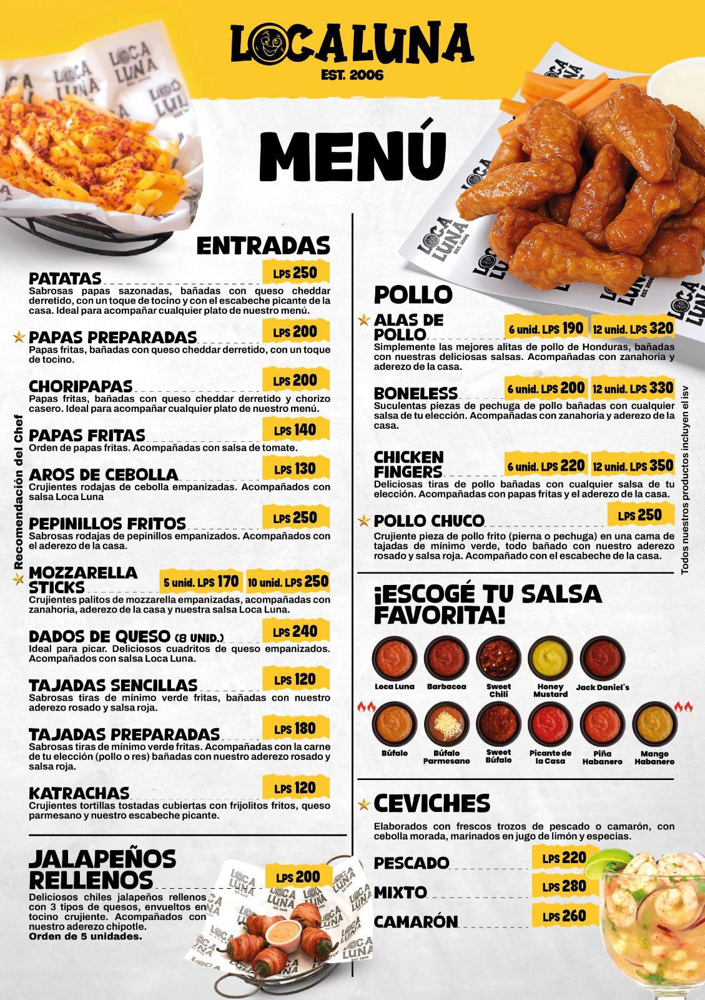

Tressucursales.Un soloWhatsApp.
Una propuesta de Casa Digital para Loca Luna.

Desde2006.
Y hoy ustedes publican tres sucursales:
- Los Castaños
- Las Hadas
- Choluteca
Con delivery de 10 am a 10 pm.
Datos de su Instagram y su TikTok. Foto de uno de sus videos.


Su menú completo,con sus 11 salsas.
El WhatsApp lo aprende tal como está: los mismos nombres y los mismos precios.
El cliente escribea un solo número.
Loca LunaCuenta de empresa
Buenas, quiero 12 alitas búfalo para recoger en Las Hadas
¡Con gusto! 12 Alas de Pollo en salsa Búfalo, L 320. ¿A nombre de quién?
Carlos
Listo, Carlos. Su pedido ya está en la cocina de Las Hadas. Le aviso cuando esté listo.
Conversación de ejemplo. L 320 es el precio de su menú.
Y cada pedido caeen su cocina.
Los Castaños cocina
12 Boneless · Honey Mustarddomicilio
6 Alas de Pollo · Loca Lunarecoge
Las Hadas cocina
12 Alas de Pollo · Búfalorecoge
Chicken Loversrecoge
Choluteca cocina
12 Alas de Pollo · Barbacoarecoge
6 Boneless · Sweet Chilirecoge
Pedidos de ejemplo, con productos y salsas de su menú.
Las Hadas vesolo lo suyo.
Pantalla de cocina real de Casa Digital. Pedidos de ejemplo.
Y usted ve las tresdesde su celular.
Panel real de Casa Digital. Las cifras son de ejemplo, no ventas de Loca Luna.
¿Lo vemos consu menú?
Se lo armamos con sus productos, sus precios y sus tres sucursales para que lo pruebe antes de decidir nada.
Rodrigo Herrera, por WhatsApp+1 (765) 543-4251
 Casa Digital by Clientia Tech
Casa Digital by Clientia Tech